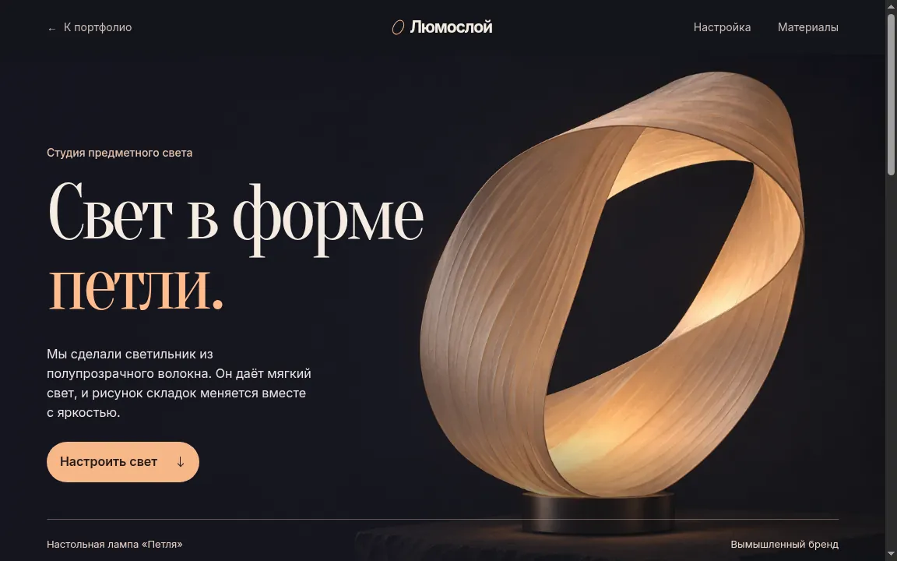
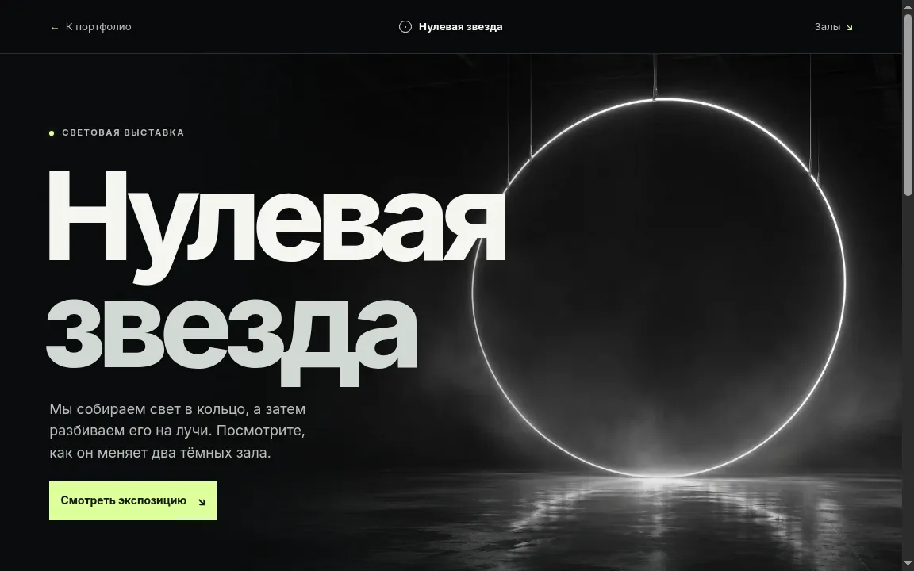
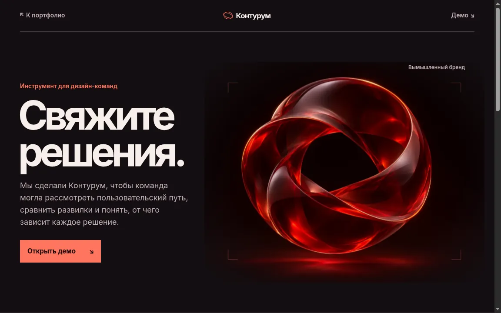
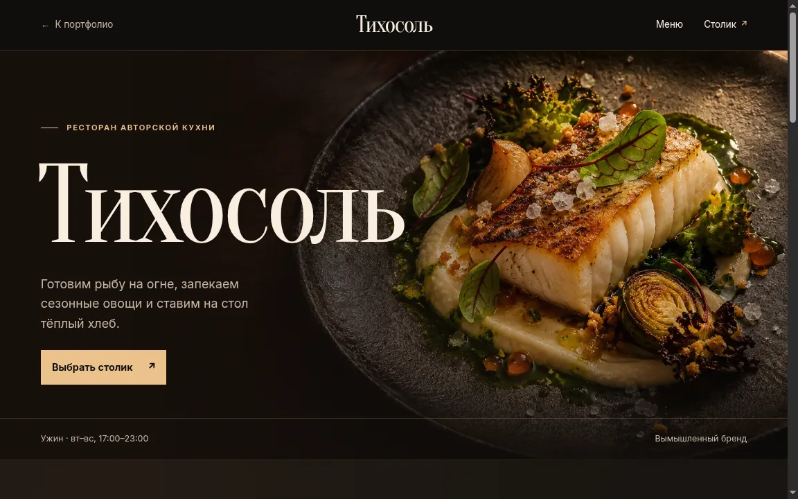
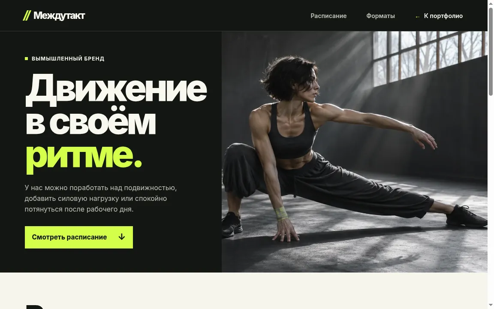

Предметный свет · флагман
Люмослой
Настройте яркость и температуру лампы «Петля» и посмотрите, как меняется свет в сцене.
Открыть сайтПортфолио веб-дизайна
Шесть самостоятельных сайтов для вымышленных брендов. У каждого свой стиль и свой сценарий для посетителя.
Смотреть работы
Предметный свет · флагман
Настройте яркость и температуру лампы «Петля» и посмотрите, как меняется свет в сцене.
Открыть сайт
Выставка
Загляните в залы световой выставки и смените сцену в интерактивном превью.
Открыть выставку
Инструмент для дизайн-команд
Переключите режим объёмной схемы и посмотрите, как меняются связи и показанные данные.
Открыть сайт
Авторский ресторан
Посмотрите меню по разделам и попробуйте выбрать столик на вечер.
Открыть сайт
Студия движения
Откройте расписание, выберите день и найдите подходящее занятие.
Открыть сайт
Архитектурное бюро
Сравните проекты и посмотрите, как устроен каждый архитектурный кейс.
Открыть сайтЭто демонстрационные проекты. Названия, услуги, телефоны и почта вымышлены. Интерактивные сценарии работают в браузере без отправки данных.